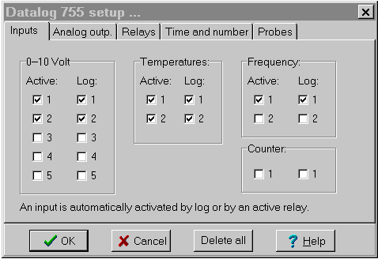
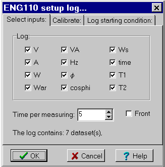
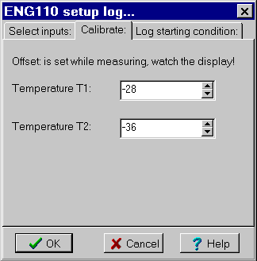
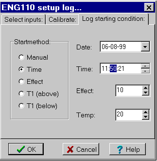
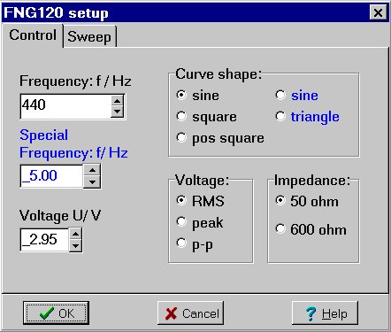
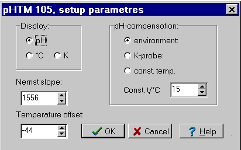

Menu in Datalyse
Elastic and inelastic collisions, see menu for collision experiments
Frequency at input A
Passage time at input A
Periods of revolution at input A
Time of oscillation at input A
Start A, stop B
Run time and passage time (acceleration measurings)
Pulse counting in table
Pulse counting, using graph
Half-time
Half-thickness
GM plateau, voltage characteristic
Datalyse does not use all functions of CNT150, but on the other hand Datalyse also adds new functionality to the counter! That might sound a bit cryptic but it is quite natural. CNT150 can be used without a PC since you can control it using the buttons, but not all these functions are necessary when controlled from the PC.
The reason for having menu topics for both pulse counting and counting with a GM-tube is that the counter has an input for pulse counting on the front and an input for a GM-tube on the back. CNT150 does only have an interval of 10 seconds for continued counting, but in Datalyse this is combined to 10 s, 20 s, 30 s 60s, 120 s. It is not a problem that the display of the counter stops for 5 seconds every 10 seconds.
Several of the menu topics in Datalyse contain exhaustive calculations of measured data. The makes it easy to use the counter for experiments. This is particularly true for the collision experiments.
Menu in Datalyse
Multitable
Setup of inputs and outputs...
Read log, the log is read and written to the table.
Delete log.
The datalogger has:
The device also has a datalog of 1948 bytes. Since every measured value takes two bytes, it is possible to log a total of 974 values. If for instance 2 voltages and 1 temperature is logged there is room for 1948/6 = 324 data sets. The logging time can be any integer number of seconds from 1s to 1800s.
When the device is connected to a PC, logging is done online, i.e. the data in the log of the device is left unchanged. If you wish to use the device elsewhere, first connect it to a PC and setup logging time and select the active inputs and relays. Then turn off the device and PC and go data gathering. When back, you can transfer the data to the PC.
The log of the device must not be active, when Datalyse is started!

Inputs:
On this tab sheet an input is set to be active or for logging.
When you press OK, Datalyse activates all outputs to be used for logging or by a relay automatically.
Analog Outputs:
Each of the outputs can be set from 0.00 to 5.00 Volt, but the values are lost when the device is turned off.
Relays:
On this tab sheet you choose which relays are active, which inputs the relays should use and the limits for on and off.
When the on-limit is smaller than the off-limit, the relays turns on when the input value becomes greater than the on-limit and off when the input becomes greater than the off-limit. (heating).
If the on-limit is greater than the off-limit, this is reversed. (cooling).
Time and number:
Here you can choose the time per measurement both for online and offline logging, as well as number of measurings at online logging. The first measuring is made, when the first time interval has passed. Not when log is started!
Probes:
You can connect Vernier-probes to the two inputs on the back of the device. The inputs are parallel to input 1 and 2 (changed dec. 1998).
So the selection of »Vernier-probe« causes the data on input 1 and 2 to be calculated into relevant values automatically when logging online. E.g. if »CO2 Gas Sensor« has been selected the voltage is calculated from Volt to ppm.
Datalyse reads the sensors from the file »Vernier.ini«. This file contains: Name of sensor, unit, y-axis factor and y-axis offset. You can add sensors to the file yourself. You can also type in unit y-axis factor and y-axis offset directly in the menu.
Menu in Datalyse
Graphical measurement
Setup...
Functions:
You can set the remote display to:
Case 1: Slave. It is possible to write to the display of the DM450. This has not been implemented in Datalyse yet.
Case 2: Special instrument is particularly interesting in Datalyse in the case where you measure the voltage of for instance a Vernier probe. This could be e.g. a Force sensor. The probe is connected to for instance a battery box (2515.60 from SF) and the DM450 is set to measure voltage Vdc, max 4 volt or max 40 volt.
When setting up Measure (t, f(t)) in Datalyse you choose probe and Send Value to DM450. Then you set the DM450 to Remote Display.
While measuring Datalyse will display the correct Force both on screen and on the device.
Case 3, 4 and 5: Using the accompanying cross connector you connect for instance another Elcanic instrument to the DM450. In this setting the DM450 can only be used as a remote display. It cannot be used with a pc at the same time since it only has one serial connector.
Menu in Datalyse
Graphical measurement
Multitable, a number of parameters are measured, see below.
Overview, displays all measured parameters.
Display, submenu to modify parameter displaying.
Setup log
Read log, the log is read by Datalyse and written to the table.
Start / Stop log
Reset Energy
Reset time
The energy meter displays effect as well as consumed energy. It can also measure two temperatures at the same time. The function buttons »up« and »down« switches the display between:
When measuring graphically one of the above parameters is measured. In multitable in Datalyse I have skipped the parameters written in italic above. If you wish to draw several graphs in the same coordinate system, you have to choose multitable and choose graph in the table when the measuring is done. Here you can select as much as 10 y-values for the same graph.
In version 2.0 the following has been added:
The log can contain about 31 kB. The number of data sets depend on the number of parameters logged.

Select inputs:
On the image above I have placed the functions, as they have been placed on the device. But the phase, j, covers two parameters: j and cos(j).
Each data set consists of a time stamp and from 0 to 13 parameters. It does, of course, not make any sense to log 0 parameters however.
If all parameters are logged, the log will have room for 534 data sets, if only one is logged, it will be able to contain 3100 data sets.
Time per measuring can be set from 1 second to 3600 seconds.

Calibrate thermo probes:
On this tab sheet you can specify the offset of the two temperature inputs. The number must be between -100 and 100. Scroll slowly up and down using the arrows until the energy meter displays the desired temperature.
Note that on this tab sheet the setting will take effect immediately, while on the first tab sheet it will not become effective until OK is clicked.

Log starting condition:
Here the different choices for the log starting condition are available:
| Start method | The log starts when: |
| Manual | Start/stop on device or in menu in Datalyse |
| Time | Internal time increases to the specified time |
| Effect | consumed effect increases to specified effect |
| T1 above | the temperature on input 1 is above specified temperature |
| T1 below | the temperature on input 1 is below specified temperature |
The condition is setup from Datalyse and, of course, saved even if the device is turned off.
Menu in Datalyse:
Graphical measurement
Setup parameters
Sweep: measuring microphone-signal as a function of frequency.
The tone generator is very useful for sound experiments.

FNG120 has two settings:
A normal setting with frequencies from 0-130 kHz with a curve shape of either sine, square or positive square.
A special setting (in blue) with frequencies from 0.10 to 20.00 Hz with a curve shape of either sine or triangle.
Sweep:
You can set the step from 1-10 kHz with a resolution of 1 Hz and the time step from 0.05 - 5.00 s.
When FNG120 makes a sweep, corresponding values of frequency and microphone signal are sent to PC as they are being measured.
Menu in Datalyse:
Graphical measurement
Multitable measure pH and temperature.
Setup parametres

In Setup parameters you can choose:
Display on the pH-meter:
pH, t/°C or T/K.
pH-compensation:
environment: the temperature is measured internally.
K-probes: the temperature is measured with a K-probe.
Constant temperature: type in the temperature.
Constant temperature is only available in this menu, while the other two settings are available from the buttons on the front of the device.
You can calibrate the pH-meter via two parametres: asymmetry voltage and Nernst slope.
Asymmetry voltage:
Erroneous voltage from the pH-glass electrode. Ideally the pH-glass electrode will give 0 mv at 7 pH. The error is corrected with the buttons »Buffer adj.« on the front of the pHTM105.
Nernst slope:
The relative slope of the pH-glass electrode is adjusted in this menu as follows:
- The meter is set to display pH and the pH-glass electrode is placed in a buffer with pH = 7.
- When the display becomes stable, the setting is adjusted using Buffer adj. until the meter displays pH = 7.
- Then the electrode is placed in another buffer with for instance pH = 4 and the Nernst slope is adjusted until the meter displays pH = 4.00.
The displayed Nernst slope is transferred to the meter and saved.
Temperature offset:
If the thermo probe does not display the correct temperature, you can adjust the offset here. The setting is transferred to the meter and saved.
Menu in Datalyse:
Graphical measurement
Multitable, of pressure and temperature.
Calibrate
PTM100 sends data to the PC constantly (app. twice a second).
The display of the PTM100 will display a pressure from 0 to 200 kPa. At 200 kPa the display shows - - - - , but values somewhat greater than that is still send correctly to the PC.
According to Elcanic the temperature should be between 0 and 250 °C, but the device is capable of displaying negative temperatures as well as sending them to the PC.
So it is possible to make experiments using a freezing mixture.
The inner diameter of the hose is 3 mm and its length is about 120 cm.
Calibrate:
PTM100 is calibrated from the factory, so normally you would not need to change the parametres!
Calibrate pressure as follows:
Adjust the amplification until a modification in the absolute pressure of 100 kPa gives a modification in the reading of 100 kPa.
Then adjust the offset until the absolute pressure corresponds to the reading.
Calibrate temperature by adjusting the offset until the reading is correct.
Reset adjust the parametres as shown. The pressure transducer measure pressure in the interval 0 to 30psi (0-206,84kPa). Therefore the setting (Amplification=full-scale=2068 and offset = 0)
Menu in Datalyse:
Half-thickness, you can type in the plate thickness before each measuring.
Half-time (and other time dependant measurings).
Poisson distribution,
Version 1.02 lacks a command for sending data from the device to the PC, which means you cannot use the measuring times 1 second and infinity for data gathering.
RM400 is equipped with memory capable of containing 60 measurings. The memory cannot be used with data gathering.
Version 1.03
When the device is stopped during infinite time, a measuring is send to the PC.
In automode you can measure in all constant times. When measuring at 1 second every 5 measuring is displayed on the RM400 and all measurings are send to PC.
Baud rate 9600, no parity, 1 stop, 8 data bits. Command for version. The cable is female in both ends but otherwise standard.
Data is send packed, which means you cannot use the terminal program for data gathering.
Elcanic, Gørtlervej 3, DK 5750 Ringe, Denmark: www.elcanic.dk